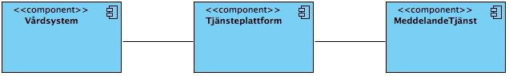

infrastructure: itintegration: messagebox
1.0.0 - draft
infrastructure: itintegration: messagebox - Local Development build (v1.0.0) built by the FHIR (HL7® FHIR® Standard) Build Tools. See the Directory of published versions
Källa: Tjänstekontraktsbeskrivning Meddelandetjänst, version 1.0.0 (2013-12-04), Tjanstekontrakt_Meddelandetjanst_Beskrivning.doc.
Meddelandetjänst
Tjänstekontraktsbeskrivning
Version 1.0.0
2013-12-04
Revisionshistorik
| Revision Nr | Revision Datum | Beskrivning av ändringar | Ändringar gjorda av | Granskad av |
|---|---|---|---|---|
| PA1 | 2013-11-06 | Första version | Mats Ekhammar, Callista Enterprise AB | |
| PA2 | 2013-11-21 | Ändrad beskrivning av informationsmodell efter granskningskommentar från CeHis. | Mats Ekhammar, Callista Enterprise AB | CeHis, arkitektur och regelverk |
| 1.0 | 2013-12-04 | Godkänd och kategoriserad till gemensam | Mats Ekhammar, Callista Enterprise AB | CeHis, arkitektur och regelverk |
Referenser
| Namn | Dokument | Kommentar | Länk |
|---|---|---|---|
| R1 | Arkitekturella beslut - Meddelandetjänst | Obligatoriskt |
Detta är beskrivningen av tjänstekontrakten i tjänstedomänen infrastructure:itintegration:messagebox (infrastruktur:tjänsteförmedlingstjänster:meddelandetjänst). Den svenska benämningen är ”Nationella Tjänstekontrakt för Meddelandetjänsten”.
Tjänstekontraktsbeskrivningen är ett teknisk-oberoende, formellt regelverk som reglerar integrationskrav för parter (tjänstekonsumenter och tjänsteproducenter) som avser ansluta system för samverkan enligt dessa tjänstekontrakt . Tjänstekontraktsbeskrivningen är också ett viktigt underlag för skapande av de tekniska kontrakten (scheman och WSDL-filer).
Detta dokument kompletterar reglerna i de tekniska kontrakten. Tjänsteproducenter och tjänstekonsumenter ska m.a.o. följa såväl de maskintolkbara reglerna i de tekniska kontrakten, så väl som de regler som uttrycks verbalt i detta dokument.
Denna tjänstekontraktsbeskrivning redovisar inte hur ett meddelande hamnar i Meddelandetjänsten då denna tjänst är tänkt att hantera alla typer av tjänstekontrakt. Dvs den ändpunkt som tar emot meddelanden låses ej till ett specifikt tjänstekontrakt.
Nedanstående bild visar schematisk vilka system som använder tjänstedomänens tjänstekontrakt. Det finns följande huvudflöden:

Figur 1. Översikt över system som använder tjänstedomänens tjänstekontrakt
I arbetet har följande personer deltagit:
Tjänstedomänansvarig:
??
Projektgrupp 2013-01-01 - 2013-12-31
Peter Lindgren, Inera AB, projektledare
Mats Ekhammar, Inera AB, arkitekt